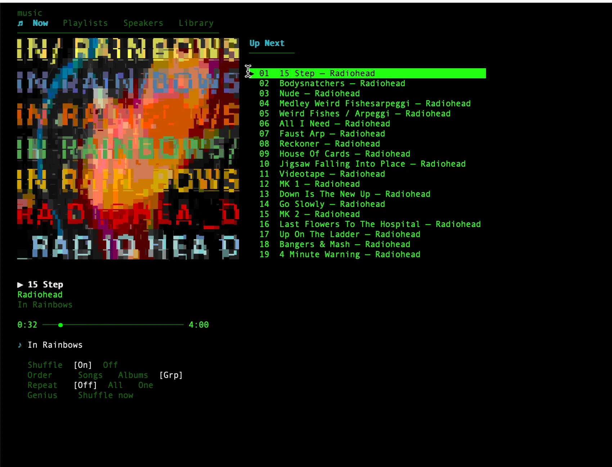
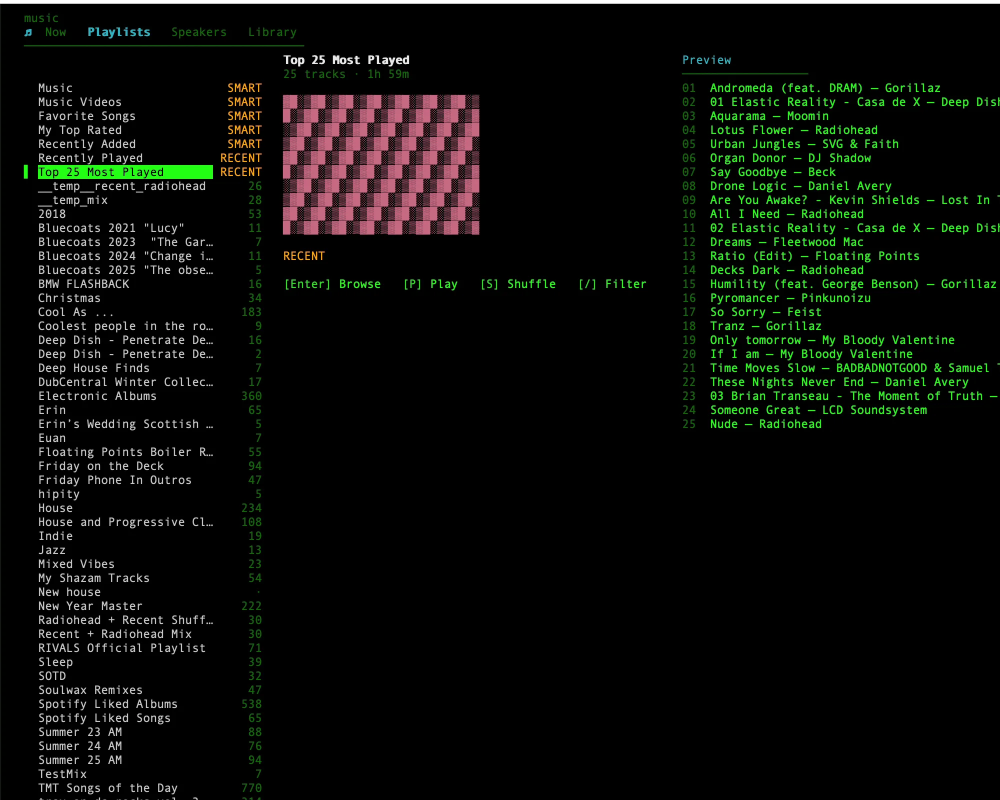
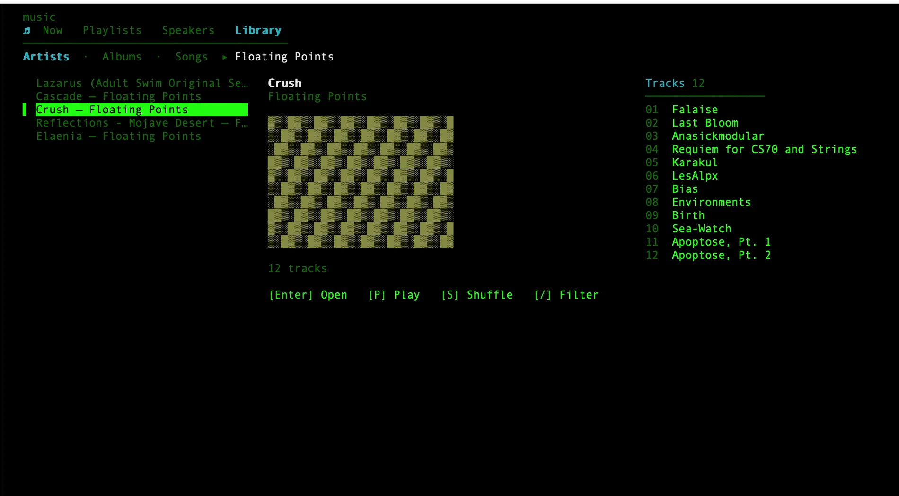
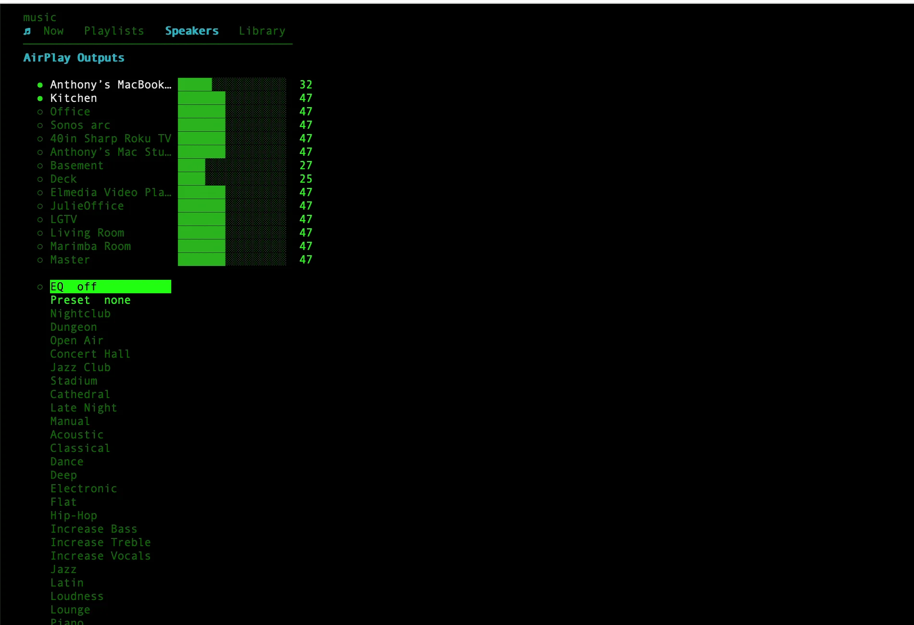

__ ___ _ ________ ______ / |/ /_ _______(_)____ /_ __/ / / / _/ / /|_/ / / / / ___/ / ___/ / / / / / // / / / / / /_/ (__ ) / /__ / / / /_/ // / /_/ /_/\__,_/____/_/\___/ /_/ \____/___/
Your whole music library, in a real terminal.
An interactive TUI for Apple Music on macOS: Now, Library, Playlists, Radio, Speakers. Verified multi-room playback, radio stations, a venue equalizer, live now-playing. Prefer words? Hand the multi-step jobs to Claude Code.
┌──────────────────────────────────────────────────────┐ │ ▶ Everything In Its Right Place — Radiohead │ │ Kitchen [60] · Living Room [60] · shuffle │ └──────────────────────────────────────────────────────┘
♫ Two ways to drive it
Type a command when you know what you want. Ask Claude when the job spans search, playback, routing, and playlists. It composes the calls for you.
♫ Straight answers
The stuff you actually want before installing something: the keys, the install line, how to script it, where it puts its files, and what it needs.





♫ Four ways to use it
One entry point, four levels of control. Start with the media keys your Mac already has and go all the way to a scriptable API. Pay only the setup you actually need.
♫ Under the hood
♫ Install
Homebrew alone gives you playback, multi-room routing, volume, the TUI, and the status line, with no account. Only catalog search and library browsing need step 3. Requires macOS, Apple Music, and Swift 5.9+ (ships with Xcode).